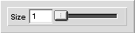

|
|
Color Selector -tool
Color selector -tool selects colors from the image. It is used by clicking on the image over the color that needs to be selected. The selected color will then become the new foreground-color. If the mouse is moved over the image while the button is held down, a window will pop up showing in RGB-coordinates the color that is under the cursor.
Settings
Figure 1 shows the contents of the tool-setup-window when it is displaying the setup for the color selector -tool.
Figure 1: Setup view for the color selector -tool.
| 
|
- Size
- If this option is 1, the selected color will be the one under the cursor. If this is bigger than 1, the selected color will be taken as an average from the rectangular area that has the width indicated by size and whose centerpoint is under the cursor.
|